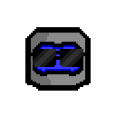
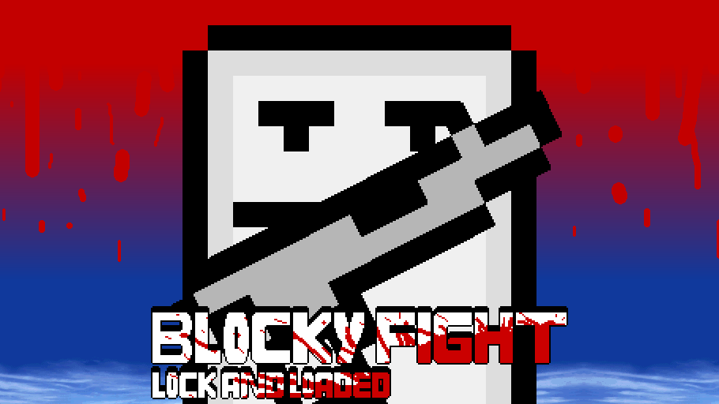
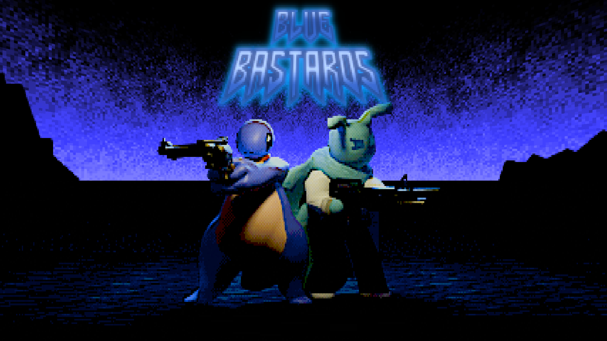
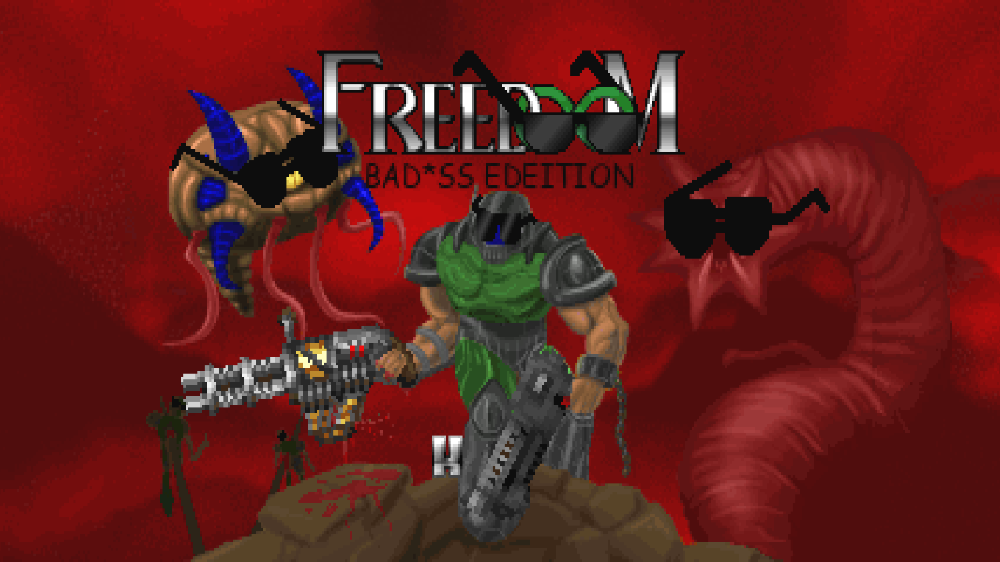

Saver310's Projects |
Blocky Fight: Lock and Loaded itch.ioGame Jolt Blocky Fight is back with more frantic local multiplayer action, now remade in Godot! Now with Pistols, Shotguns, SMGs, Swords, LMGs, Crack Pipes, you name it! You can slice, shoot, blast your opponent's face off and look at those really cool explosions!!!
|
 |
Blue Bastards GitHubDoomworld Thread ModDB Gamebanana itch.io Game Jolt A fast paced gameplay mod for UZDoom, inspired by the Metal Slug series, various boomer shooters and mods such as Russian Overkill, starring our awesome OCs Ace Deathshead and Spot blasting it out with shotguns, submachine guns, whiskey bottles, nukes and more! Both Spot and Ace have unique weapons to destroy the hellish demonic force who've done them wrong, so show them what REAL HELL looks like!
|
 |
freedoom bad*ss edition WebsiteGitHub ModDB itch.io Game Jolt the single most bad*ss freedoom mod to ever hit the internet
|